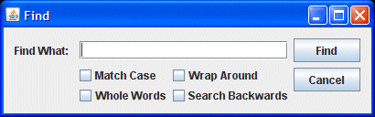

Lección: Modificando la Apariencia
Sección: La Apariencia Synth
Un Ejemplo de Synth
En la lección titulada
Un Ejemplo de GroupLayout ,
GroupLayout fue usada para crear un cuadro de diálogo de búsqueda llamado "Buscar."
El programa que creó el cuadro de diálogo, Find.java, usó la plataforma cruzada del
aspecto ("Metal") con el tema "Ocean":

Esta lección crea el mismo cuadro de diálogo con Synth, usando un fichero XML externo. Aquí está el listado del
fichero
SynthDialog.java
.
SynthDialog.java es exactamente el mismo que Find.java excepto por el método
initLookAndFeel(), el cual ha sido alterado para usar el aspecto Synth con un fichero externo
llamado synthDemo.xml. Aquí está el nuevo método initLookAndFeel():
private static void initLookAndFeel() {
SynthLookAndFeel lookAndFeel = new SynthLookAndFeel();
// el método SynthLookAndFeel load() lanza una checked exception
// (java.text.ParseException) que debe ser manejada
try {
lookAndFeel.load(SynthDialog.class.getResourceAsStream("synthDemo.xml"),
SynthDialog.class);
UIManager.setLookAndFeel(lookAndFeel);
}
catch (ParseException e) {
System.err.println("No puede obtener el aspecto especificado ("
+ lookAndFeel
+ "), por alguna razón.");
System.err.println("Usando el aspecto por defecto.");
e.printStackTrace();
}
}
El Fichero XML
El fichero XML, synthDemo.xml, empieza con un estilo asociado a todas las regiones. Es una buena
práctica hacer esto para asegurar que las regiones sin un estilo asociado contengan algo. Este estilo hace que
todas las regiones pinten su fondo en un color opaco. También establece una fuente por defecto y unos colores
por defecto.
<!-- Estilo que todas las regiones usarán -->
<style id="backingStyle">
<!-- Hace que todas las regiones sean opacas -->
<opaque value="TRUE"/>
<font name="Dialog" size="14"/>
<state>
<color value="#D8D987" type="BACKGROUND"/>
<color value="RED" type="FOREGROUND"/>
</state>
</style>
<bind style="backingStyle" type="region" key=".*"/>
Notas:
1. Las definiciones de color deben estar dentro de un elemento <state>. Esto permite cambiar los
colores dependiendo del estado. El elemento <state> en backingStyle no tiene atributos y
por lo tanto es aplicado a todas las regiones, independientemente de su estado. Si una región tiene otros
estados, los estados se fusionan con la prioridad dada a las definiciones de estado que aparecen más
adelante en el archivo.
2. La definición de la fuente no está dentro del elemento <state> porque la fuente no debería cambiar cuando hay un cambio de estado (muchos componentes son redimensionados dependiendo de su fuente, y un cambio en la fuente podría causar que los componentes cambien en tamaño involuntariamente).
El siguiente elemento <style> definido es para el campo de texto, el cual es pintado usando una imagen.
<style id="textfield">
<insets top="4" left="6" bottom="4" right="6"/>
<state>
<font name="Verdana" size="14"/>
<color value="#D2DFF2" type="BACKGROUND"/>
<color value="#000000" type="TEXT_FOREGROUND"/>
</state>
<imagePainter method="textFieldBorder" path="images/textfield.png"
sourceInsets="4 6 4 6" paintCenter="false"/>
</style>
<bind style="textfield" type="region" key="TextField"/>
Notas:
1. Las definiciones de fuente y color sobreescriben las definiciones en backingStyle.
2. Las insets y sourceInsets tienen los mismos valores, lo cual es simplemente
una coincidencia porque no están relacionadas entre sí.
3. El color BACKGROUND, #D2DFF2, es un azul pálido — el mismo color que el fondo en la imagen,
textfield.png.
4. paintCenter es falso así que puede ver el color de fondo.
El siguiente elemento <style> es para botones que son pintados con imagenes diferentes, dependiendo del estado del botón. Cuando el ratón pasa sobre el botón, su apariencia cambia. Cuando es pulsado (PRESSED) la imagen cambia de nuevo.
<style id="button">
<!-- Desplaza el texto un pixel cuando es presionado -->
<property key="Button.textShiftOffset" type="integer" value="1"/>
<!-- estable el tamaño de los botones -->
<insets top="15" left="20" bottom="15" right="20"/>
<state>
<imagePainter method="buttonBackground" path="images/button.png"
sourceInsets="10 10 10 10" />
<font name="Dialog" size="16"/>
<color type="TEXT_FOREGROUND" value="#FFFFFF"/>
</state>
<state value="PRESSED">
<imagePainter method="buttonBackground"
path="images/button_press.png"
sourceInsets="10 10 10 10" />
</state>
<state value="MOUSE_OVER">
<imagePainter method="buttonBackground"
path="images/button_over.png"
sourceInsets="10 10 10 10" />
</state>
</style>
<bind style="button" type="region" key="Button"/>
Notas:
1. Las definiciones de fuente y color dentro del elemento <state> sin atributos aplican a todos los estados de los botones. Esto es porque las definciones de todos los estados que aplican (y el elemento <state> sin atributos es uno de estos) se fusionaran y no hay otras definiciones de fuente y color que podría tomar precedencia.
2. Los valores de sourceInsets son los bastantes grandes para que las esquinas curvadas de la
imagen de abajo no sean estiradas.
3. El orden de los estados PRESSED y MOUSE_OVER es importante. Ya que el ratón
estará siempre sobre el botón cuando es presionado, ambos estados se aplicarán a un botón presionado y el
primero estado definido (PRESSED) se aplicará. Cuando el ratón está sobre el botón pero no es
presionado, sólo el estado MOUSE_OVER aplica. Si el orden de los estados PRESSED
y MOUSE_OVER se invierten, la imagen del estado PRESSED nunca será usada.
El siguiente elemento <style> es para las casillas de verificación que son pintadas con iconos diferentes, dependiendo del estado de la casilla de verificación.
<style id="checkbox">
<imageIcon id="check_off" path="images/checkbox_off.png"/>
<imageIcon id="check_on" path="images/checkbox_on.png"/>
<property key="CheckBox.icon" value="check_off"/>
<state value="SELECTED">
<property key="CheckBox.icon" value="check_on"/>
</state>
</style>
<bind style="checkbox" type="region" key="Checkbox"/>
Notas:
1. Debe usar el elemento <imageIcon> para definir cualquier icono que se use.
2. El elemento <insets> y el atributo sourceInsets no es usado con iconos porque
son presentados en su tamaño fijo y no son estirados.
3. El icono usado para representar la casilla de verificación es el icono nombrado en la propiedad
CheckBox.icon. (vea
javax/swing/plaf/synth/doc-files/componentProperties.html
), el cual es el icono con id="check_off" a menos que el estado de la casilla de verificación
sea SELECTED.
El fichero synthDemo.xml se construye con los estilos presentados arriba, envueltos en etiquetas
<synth></synth>. Puede abrir el fichero completo pulsando
synthDemo.xml
.
Intente esto:
Pulse el botón Lanzar para ejecutar el ejemplo SynthDialog usando Java™ Web Start ( descargue KDD 7 o posterior ). Alternativamente, para compilar y ejecutar el ejemplo usted mismo, consulte el índice de ejemplos.